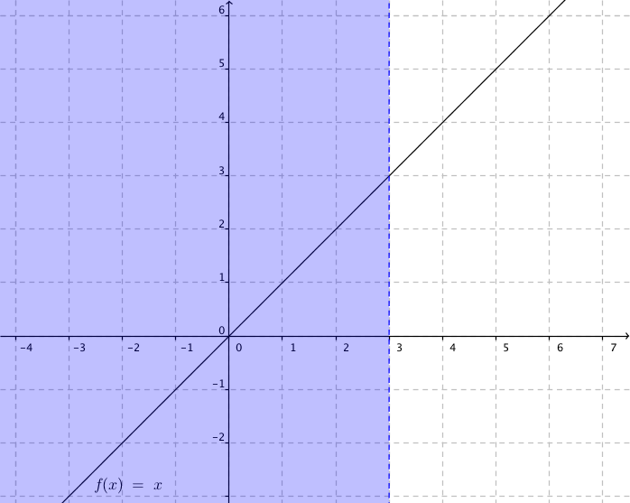
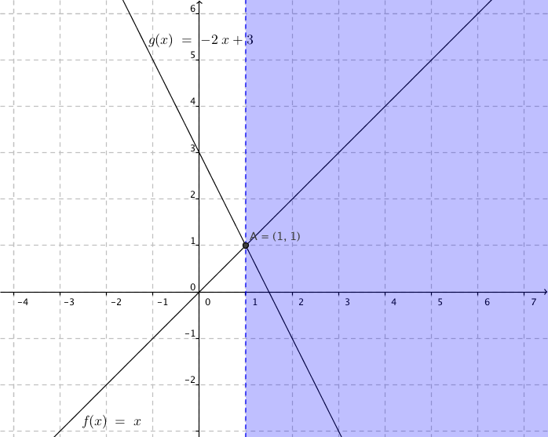

7. Olikheter av första grad
Vi börjar med att studera intervall. Sedan går vi över till att lösa olikheter av första grad. Du klarar galant av dessa om du vet hur du löser ekvationer av första grad.
Vad betyder symbolerna \(<, >, \leq , \geq \) och \(=\)?
Uttryck följande intervall grafiskt:
- \(x>0\)
- \(x< 0\)
- \(x\geq -1\)
- \(x\leq -1\)
- \(-1 < x \leq 0\)
Lösning
Beteckningen med en öppen boll betyder att ändpunkten inte är med i intervallet. Beteckningen med en sluten boll betyder att ändpunkten är med i intervallet.
Exempel 1 Bestäm
- \(2(x+2) \geq x\)
- \(3(x-1) < x-1\)
- \(x+1 < 2x+3\)
- \(-(x+1) > 2x\)
Lösning
Vi får
Vi får
\(\begin{array}{rcll} 2(x+2) & \geq & x & \textrm{Lös olikheten som vilken ekvation som hellst.} \\ 2x+4 & \geq & x & \textrm{Flytta likformiga termer till samma sida.}\\ 2x-x & \geq & -4 & \textrm{Förenkla} \\ x & \geq & -4 & \textrm{och svara.} \\ \end{array}\)
Vi får
\(\begin{array}{rcll} 3(x-1)& < &x-1 & \textrm{Börja med att förenkla.} \\ 3x-3& <& x-1& \textrm{Flytta över och slå ihop.} \\ 2x& <&2 & \mid /2 \textrm{ (Tänk som om du löser en ekvation.)} \\ x &< &1 & \textrm{} \\ \end{array}\)
Vi får
\(\begin{array}{rcll} x+1&< &2x+3 & \textrm{Börja med att förenkla.} \\ -x&< &2 & \textrm{OBS! Vi dividerar eller multiplicerar med }-1< 0. \\ &&& \textrm{Riktningen för olikheten ändras.} \\ x& > &-2 & \textrm{} \\ \end{array}\)
Vi får
\(\begin{array}{rcll} -(x+1)& > &2x & \textrm{Förenkla,} \\ -x-1& > &2x & \textrm{och flytta över.} \\ -3x& > &1 & \mid /(-3)< 0\textrm{ OBS! Division med -3 som är negativt.} \\ &&& \text{Riktningen ändras.} \\ x&< &-\dfrac{1}{3} & \textrm{} \\ \end{array}\)
Då vi löser olikheter av första grad utnyttjar vi följande egenskaper för de reella talen.
- Om vi adderar eller subraherar samma tal till två reella tal hålls storleksförhållandet mellan talen som samma. Alltså bibehålls riktningen för olikhenten.
- Om två reella tal multipliceras eller divideras med samma positiva reella tal hålls storleksförhållandet mellan talen som samma. Alltså bibehålls riktningen för olikhenten.
- Om två reella tal multipliceras eller divideras med samma negativa reella tal ändras storleksförhållandet mellan talen. Alltså ändras riktningen för olikhenten.
Vi ser på följande förhållande, och jobbar med det.
Talen \( -6 \) och \( 12 \) uppfyller olikheten \( -6 < 12 \).
Vi addear till bägge sidor \( 5 \): \( -6 + 5 < 12 + 5 \), alltså \( -1 < 17 \).
Vi subraherar med \( -1 \): \( -1 -1 < 17 -1 \), alltså \( -2 < 16 \).
Vi multiplicerar bägge led med \( 5 \): \( -2 \cdot 5 < 16 \cdot 5 \), alltså \( -10 < 80 \).
Vi dividerar bägge led med \( -2 \): \( \dfrac{-10}{-2} > \dfrac{80}{-2} \), alltså \( 5 > -40 \).
Exempel 2 Lös olikheteten \(\sqrt{2}x-1 < 2x\).
Lösning
\(\begin{array}{rcll} \sqrt{2}x-1 &<& 2x & \textrm{Förenkla genom att flytta över.} \\ \sqrt{2}x-2x&< &1 & \textrm{Bryt ut }x \\ x(\sqrt{2}-2)&< &1 & \mid /(\sqrt{2}-2)< 0\textrm{! Riktngen ändras.}\\ x & > & \dfrac{1}{(\sqrt{2}-2)} & \\ \end{array}\)
Exempel 3 Låt\(f(x)=x\) och \(g(x)=-2x+3\). Bestäm då
- \(f(x)<3\)
- \(f(x)> g(x)\)
Lösning
Vi ritar på Geogebra och får följande bild.

Bilden skall vi tolka som så att \(x<3\).
Vi ritar på Geogebra och får följande bild.

Bilden skall vi tolka som att \(x>1\).
Då vi arbetar med olikheter eller intervall har vi 4 tecken:
- \(<\) Mindre än
- \(\leq \) Mindre än eller lika med
- \(>\) Större än
- \(\geq \) Större än eller lika med
Uppgifter
- Uttryck följande intervall matematiskt.

- \(x>1\)
- \(x\leq -2\)
- \(x\geq 0\)
- \(x< 2\)
- \(-1 < x < 3\)
- \(0 \leq x \leq 1\)
- Lös följande olikheter (och rita intervallet).
- \(4+x < 2\)
- \(4 + x \geq 2\)
- \(2x -3 > x\)
- \(-3 + 2x > -4x -5\)
- \(7x - 4 \leq 4x +3\)
- \(-8+x \geq 8 -x\)
- \(x<-2\)
- \(x\geq -2\)
- \(x>3\)
- \(x>-\dfrac{1}{3}\)
- \(x\leq \dfrac{7}{3}\)
- \(x\geq 8\)
- Lös följande olikheter
- \(3(x-1) \leq 4 \)
\(\begin{array}{rcl} 3(x-1) & \leq& 4 \\ 3x -3 & \leq& 4 \\ 3x & \leq& 7 \\ x& \leq& \dfrac{7}{3} \\ \end{array} \)
- \(\dfrac{1}{2}(4-2x) > -3(x-\dfrac{5}{3}) \)
\(\begin{array}{rcl} \dfrac{1}{2}(4-2x) & >& -3(x-\dfrac{5}{3}) \\ 2-x & >& -3x+5 \\ 2x & >&3 \\ x & >& \dfrac{3}{2}\\ \end{array} \)
- \(2(2-x) \geq 6 \)
\(\begin{array}{rcll} 2(2-x) & \geq& 6 \\ 4-2x & \geq& 6 \\ -2x & \geq& 2 & \mid /(-2) \text{ Negativt! Riktningen byts!}\\ x & \leq & -1\\ \end{array} \)
- \(4 > \dfrac{1}{2}(-x+2) \)
\( \begin{array}{rcll} 4 & >& \dfrac{1}{2}(-x+2) \\ 4 & >& -\dfrac{1}{2}x+1 \\ \dfrac{1}{2}x& >& -3 & \mid \cdot 2\\ x & >&-6\\ \end{array} \)
- \(x < \dfrac{2}{3} (2-x) \)
\(\begin{array}{rcll} x &<& \dfrac{2}{3} (2-x) \\ x &<& \dfrac{4}{3} -\dfrac{2}{3}x \\ \dfrac{5}{3}x &<& \dfrac{4}{3} & \mid \cdot \dfrac{3}{5} \\ x &<& \dfrac{4}{5}\\ \end{array} \)
- \(x^2 > (x-2)^2 \)
\(\begin{array}{rcl} x^2 & >& (x-2)^2 \\ x^2 & >& x^2-4x+4 \\ 4x & >&4 \\ x & >&1 \\ \end{array} \)
- \(3(x-1) \leq 4 \)
- Lös olikheterna
- \(4 < 2x +3 \)
\(\begin{array}{rcll} 4 &<& 2x +3 \\ -2x &<& -1 & \mid /(-2) \text{ Negativt! Riktningen byts!}\\ x & >& \dfrac{1}{2} \\ \end{array} \)
- \(-8-x > 8+x \)
\(\begin{array}{rcll} -8-x & >& 8+x \\ -2x & >& 16 & \mid /(-2) \text{ Negativt! Riktningen byts!}\\ x &<&-8 \\ \end{array} \)
- \(-4x +5 \geq 3+x \)
\(\begin{array}{rcll} -4x +5 & \geq & 3+x \\ -5x & \geq& -2 & \mid /(-5) \text{ Negativt! Riktningen byts!}\\ x & \leq& \dfrac{2}{5}\\ \end{array} \)
- \(2(-x+3) \leq -(x +1) \)
\(\begin{array}{rcll} 2(-x+3) & \leq& -(x +1) \\ -2x+6 & \leq& -x -1 \\ -x & \leq& -7 & \mid \cdot (-1) \text{ Negativt! Riktningen ändras!}\\ x & \geq & 7\\ \end{array} \)
- \(x -(1-x) > 4x \)
\(\begin{array}{rcll} x -(1-x) & >& 4x \\ x -1+x & >& 4x \\ -2x & >& 1 & \mid /(-2) \text{ Negativt! Riktningen ändras!}\\ x &<& -\dfrac{1}{2} \end{array} \)
- \(-2(3-x) \leq 4(x-5) \)
\(\begin{array}{rcll} -2(3-x) & \leq& 4(x-5) \\ -6+2x & \leq& 4x-20 \\ -2x & \leq& -14 & \mid /(-2) \text{ Negativt! Riktningen ändras!}\\ x & \geq &7\\ \end{array} \)
- \(4 < 2x +3 \)
- Lös följande olikheter.
- \(-(7-x) > -2(x-1) \)
\(\begin{array}{rcll} -(7-x) & >& -2(x-1) \\ -7+x & >& -2x+2 \\ 3x & >& 9 \\ x & >& 3\\ \end{array} \)
- \(2x > 4x-1 \)
\(\begin{array}{rcll} 2x & >& 4x-1 \\ -2x & >&-1 & \mid /(-2) \text{ Negativt! Riktningen byts!}\\ x &<& \dfrac{1}{2}\\ \end{array} \)
- \(-(2-x) < \dfrac{1}{3}(3-x) \)
\(\begin{array}{rcll} -(2-x) &<& \dfrac{1}{3}(3-x)\\ -2+x &<& 1-\dfrac{1}{3}x\\ \dfrac{4}{3}x &<& 3 & \mid \cdot \dfrac{3}{4}\\ x &<& \dfrac{9}{4}\\ \end{array} \)
- \(2(x-1) \geq (2+x)3 \)
\(\begin{array}{rcll} 2(x-1) & \geq& (2+x)3 \\ 2x-2 & \geq& 6+3x \\ -x & \geq& 8 & \mid \cdot(-1) \text{ Negativt! Riktningen byts!} \\ x & \leq& -8\\ \end{array} \)
- \((x-1)^2 > (x-1)(x+1) \)
\(\begin{array}{rcll} (x-1)^2 & >& (x-1)(x+1)\\ x^2 -2x +1 & >& x^2-1 \\ -2x & >&-2 & \mid /(-2) \text{ Negativt! Riktningen byts!}\\ x &<& 1 \\ \end{array} \)
- \(x(2-x) \geq -(x-3)^2 \)
\(\begin{array}{rcll} x(2-x) & \geq& -(x-3)^2 \\ 2x-x^2 & \geq& -(x^2-6x+9) \\ 2x-x^2 & \geq& -x^2+6x-9 \\ -4x & \geq& -9 & \mid /(-4) \text{ Negativt! Riktningen byts!}\\ x & \leq & \dfrac{9}{4}\\ \end{array} \)
- \(-(7-x) > -2(x-1) \)
- Olikheter med rötter. För vilka värden på \(x\) gäller att
- \(-\sqrt{5}(x\sqrt{5}-\sqrt{4}) < 0 \)
\(\begin{array}{rcll} -\sqrt{5}(x\sqrt{5}-\sqrt{4}) &<& 0 \\ -5x+\sqrt{20} &<& 0 \\ -5x &<& -\sqrt{20} & \mid /(-5) \text{ Negativt! Riktningen byts!}\\ x & >& \dfrac{\sqrt{20}}{5} = \dfrac{2\sqrt{5}}{5} = \dfrac{2}{\sqrt{5}}\\ \end{array} \)
- \(\sqrt{3}(2\sqrt{6}-3\sqrt{8}) > x\sqrt{3} \)
\(\begin{array}{rcll} \sqrt{3}(2\sqrt{6}-3\sqrt{8}) & >& x\sqrt{3} & \mid /\sqrt{3}\\ 2\sqrt{6}-3\sqrt{8} & >& x & \mid \text{ Byter ledens plats, riktningen ändras.}\\ x &<& 2\sqrt{6}-3\sqrt{8} \\ &=&2\sqrt{6}-6\sqrt{2}\\ \end{array} \)
- \(\dfrac{x}{\sqrt{2}+1}> x \)
Vad dividerar vi med?\(\begin{array}{rcll} \dfrac{x}{\sqrt{2}+1}& >& x & \mid \cdot \sqrt{2}+1\\ x& >& x(\sqrt{2}+1) \\ x- x(\sqrt{2}+1) & >&0 \\ x- x\sqrt{2}-x & >& 0 \\ - x\sqrt{2} & >& 0 & \mid /(-\sqrt{2}) \text{ Negativt! Riktningen ändras!}\\ x &<& 0 \\ \end{array} \)
- \(-\sqrt{5}(x\sqrt{5}-\sqrt{4}) < 0 \)
- Bestäm det största heltal \( n \) som uppfyller olikheten \( \dfrac{n}{7} \geq \dfrac{n}{6} + \dfrac{1}{5} \).
Vi förenklar
\( \begin{array}{rcll} \dfrac{n}{7} & \geq & \dfrac{n}{6} + \dfrac{1}{5} & \mid \cdot 7 \cdot 6 \cdot 5 \\ 6\cdot 5 \cdot n & \geq & 7\cdot 5 \cdot n + 7 \cdot 6 \\ 30n & \geq & 35n + 42 \\ 30n - 35n & \geq & 42 \\ -5n & \geq & 42 & \mid /(-5) \\ n & \leq & -\dfrac{42}{5} = -8,4\\ \end{array} \)
Eftersom lösningarna är \( [-\infty ; -8,4 ] \), är det största heltalet \( -9 \).
- Låt \(f(x) = x\) och \(g(x) = -x+3\). Räkna ut skärningspunkten och rita i ett koordinatsystem de områden som avgränsas av följande linjer.
- \(f(x) > g(x)\)
- \(g(x) \geq f(x)\)
Vi får
\(f(x) > g(x)\):

\(g(x) \geq f(x)\):

- För vilka värden på \(x\) gäller att \(\dfrac{3}{3-2x} < 0 \) ?
Tänk efter! När är en kvot negativ?
Eftersom täljaren alltid är positiv räcker det med att undersöka nämnaren. Nämnaren negativ då \(3-2x< 0\), alltså då \(x>\dfrac{3}{2}\).